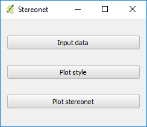
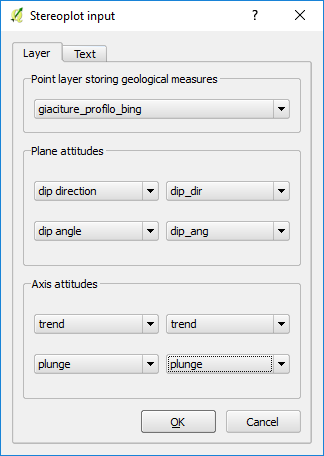
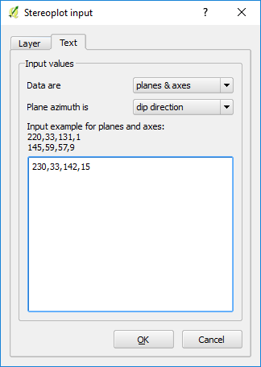
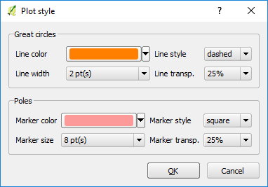
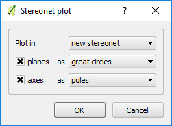

geocouche is a GGIS plugin for processing geological meso-structures.
Currently, it can:
calculate the angles between planes stored in a layer and a reference plane
plot data from layers or texts in stereonets
These two tools are available in the QGIS plugin interface (Fig. 1).
Fig. 1. geocouche interface.
The two tools are:
Geological angles
Geological stereonets
Geological angles
This tool allows to calculate the angles (as degrees) between a reference plane and the features in a point layer (Fig. 2).
It can be applied to determine the degree of misalignement between a reference (for instance, regional) measure and local geological measures.
Fig. 2. Geological angles calculation interface.
The user has to define the two fields storing the azimuth (dip direction or RHR strike) and the dip angle of each feature,
the attitude of the reference plane, and the name of the output shapefile with a new field storing the calculated angle (Fig. 3).
Fig. 3. Definition of parameters for angle calculation.
Geological stereonets
It allows to produce stereonets depicting geological plane and axis attitudes (Fig. 4).
There are three steps:
Choice of input data
Definition of plot style
Data plotting

Fig. 4. Stereonet interface.
Choice of input data
It is possible to use input data from data stored in a point layer (Layer tab, Fig. 5)
or to use text input (Text tab, Fig. 6).
Input from point layer
When using a point layer (already loaded in the TOC), plane and/or axis attitudes
are defined via the fields storing their values (Fig. 5).

Fig. 5. Input from point layer interface.
Input from text
The input can be inserted into a text window (Fig. 6), defining if data consist of:
planes
axes
planes and axes
Another option to take care of for plane data, is whether orientations are expressed
using dip direction or RHR strike.

Fig. 6. Input from text interface.
Plot style
Styles can be defined for both great circles and poles: color, width/size, line/marker style, and transparency.
Settings are stored in memory.

Fig. 7. Plot style interface.
Stereonet plotting
Plots can use a new or a pre-existing stereonet (provided it was not closed) (Fig. 8).
Planar can be plotted as great circles or as plane normals, axes as poles or as normal great circles.

Fig. 8. Stereonet plot interface.
An example of stereonet is shown in Fig. 9.
Fig. 9. Stereonet example.